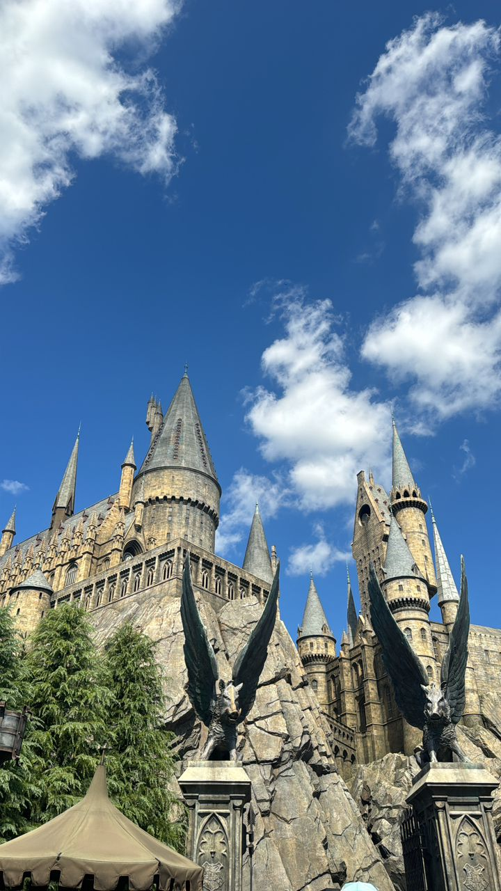
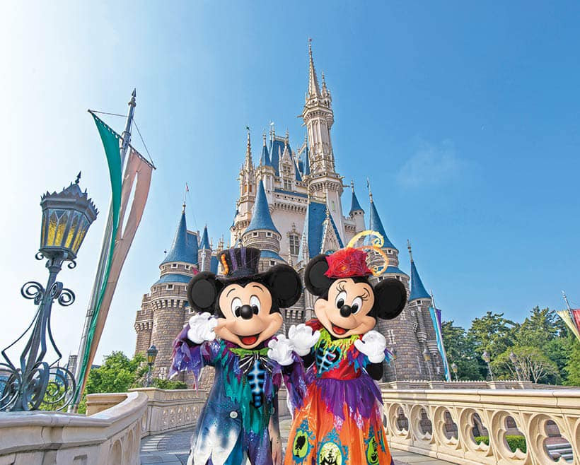
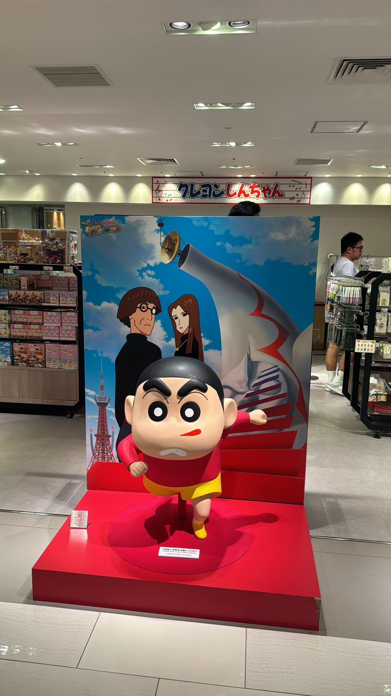
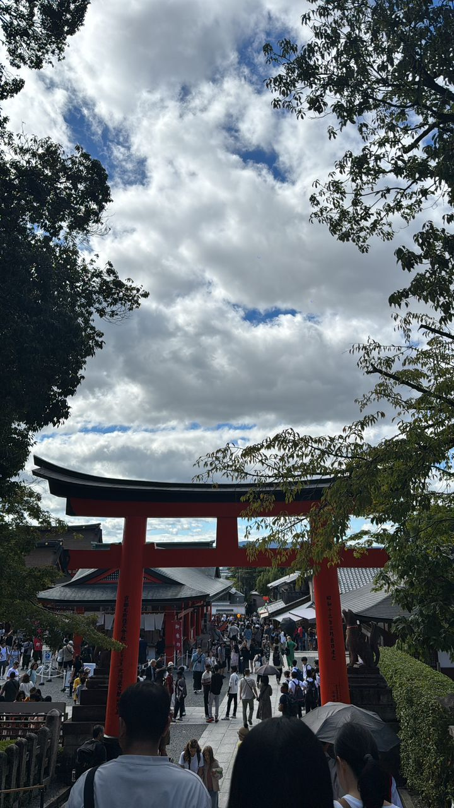
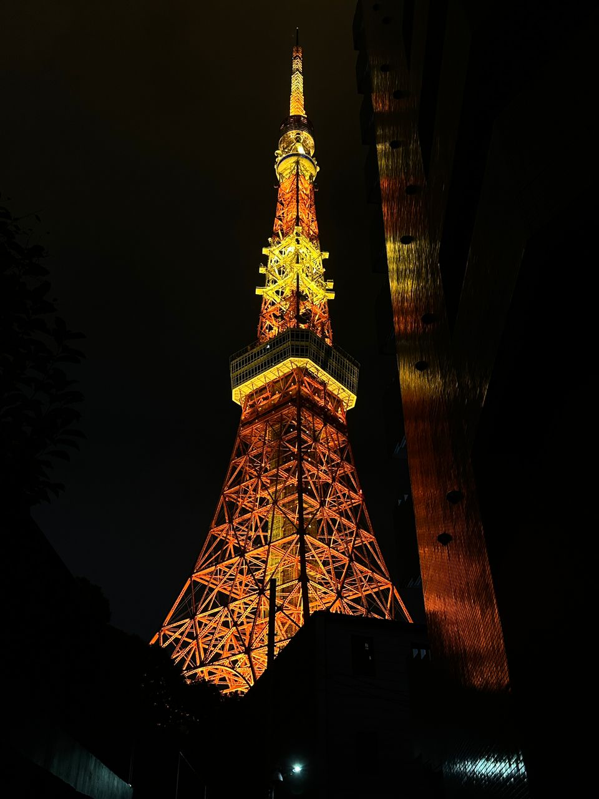

Tokyo Night Street
Ideal for people looking for a place to eat in the evening, this place boasts this different storefront.It gives people a variety of choices, and of course it has izakaya for people to relax.

Hit the spot, famous tourist attraction.
Ancient Castle
Historic old fort for the adventurous.Hit the spot, famous tourist attraction.

Suitable for all to visit, but men and women
Disneyland
An amusement park with many famous cartoon hit spots and places to play.Suitable for all to visit, but men and women

Crayon Shin-chan
Crayon Shin-chan (クレヨンしんちゃん) is a famous Japanese animated character known basically all over the world. It is a place to visit and sells many Crayon Shin-chan peripheral goods.

Many people come from far and wide to worship here in the hope of receiving the blessings of the gods.
Japanese Shrine
It is a festival facility where Shintoism, the inherent religion of Japan, is practised.Many people come from far and wide to worship here in the hope of receiving the blessings of the gods.

It's perfect for people to hit up, and because Tokyo is the centre of the Japanese city there are many spots near the Tokyo Tower, making it a great place for young people.
Tokyo Tower
Tokyo Tower is one of the more famous places in Japan, and when people think of Tokyo they must think of the Tokyo Tower.It's perfect for people to hit up, and because Tokyo is the centre of the Japanese city there are many spots near the Tokyo Tower, making it a great place for young people.